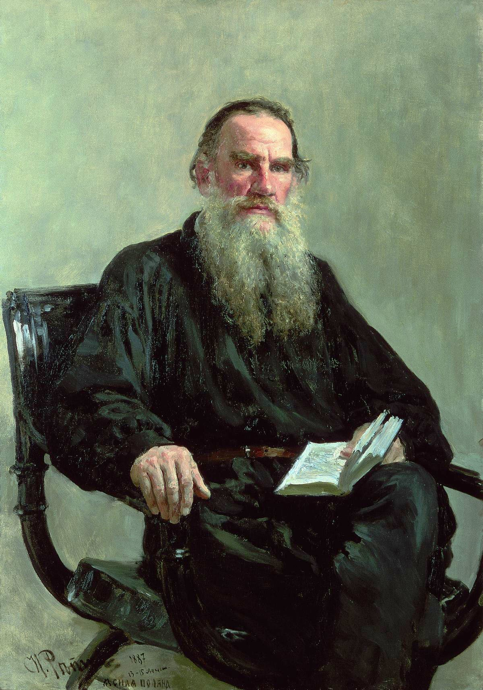

Немного информации
Граф Лев Никола́евич Толсто́й (28 августа [9 сентября] 1828, Ясная Поляна, Тульская губерния, Российская империя — 7 [20] ноября 1910, станция Астапово, Рязанская губерния, Российская империя) — один из наиболее известных русских писателей и мыслителей, один из величайших писателей-романистов мира. Участник обороны Севастополя. Просветитель, публицист, религиозный мыслитель, его авторитетное мнение послужило причиной возникновения нового религиозно-нравственного течения — толстовства. За свои взгляды был отлучён от РПЦ. Член-корреспондент Императорской Академии наук (1873), почётный академик по разряду изящной словесности (1900). Был номинирован на Нобелевскую премию по литературе (1902, 1903, 1904, 1905). Впоследствии отказался от дальнейших номинаций. Классик мировой литературы. Писатель, ещё при жизни признанный главой русской литературы. Творчество Льва Толстого ознаменовало новый этап в русском и мировом реализме, выступив мостом между классическим романом XIX века и литературой XX века. Лев Толстой оказал сильное влияние на эволюцию европейского гуманизма, а также на развитие реалистических традиций в мировой литературе. Произведения Льва Толстого многократно экранизировались и инсценировались; его пьесы ставились на сценах всего мира. Лев Толстой был самым издаваемым в СССР писателем за 1918—1986 годы: общий тираж 3199 изданий составил 436,261 млн экземпляров. Представитель графской ветви дворянского рода Толстых, происходящей от петровского сподвижника П. А. Толстого. Писатель имел обширные родственные связи в мире высшей аристократии. Среди двоюродных братьев и сестёр отца — авантюрист и бретёр Ф. И. Толстой, художник Ф. П. Толстой, красавица М. И. Лопухина, светская дама А. Ф. Закревская, камер-фрейлина А. А. Толстая. Поэт А. К. Толстой приходился ему троюродным братом. Среди двоюродных братьев матери — генерал-лейтенант Д. М. Волконский и богатый эмигрант Н. И. Трубецкой. А. П. Мансуров и А. В. Всеволожский были женаты на двоюродных сёстрах матери. Толстой был связан свойство́м с министрами А. А. Закревским и Л. А. Перовским (женаты на двоюродных сёстрах его родителей), генералами 1812 года Л. И. Депрерадовичем (женат на сестре бабушки) и А. И. Юшковым (деверь одной из тёток), а также с канцлером А. М. Горчаковым (его отец Горчаков Михаил Алексеевич (1768—1831) был двоюродным братом бабушки писателя — Пелагеи Николаевны Горчаковой (1762—1838)). Общим предком Льва Толстого и Пушкина был адмирал Иван Головин, помогавший Петру I создавать русский флот.
Детство
Лев Николаевич Толстой родился 28 августа 1828 года в Крапивенском уезде Тульской губернии, в наследственном имении матери — Ясной Поляне. Был четвёртым ребёнком в семье. Мать умерла в 1830 году от «родовой горячки», как тогда говорили, через полгода после рождения дочери, когда Льву не было ещё и трёх лет.Воспитанием осиротевших детей занялась дальняя родственница Т. А. Ергольская. В 1837 году семья переехала в Москву, поселившись на Плющихе, так как старшему сыну надо было готовиться к поступлению в университет. Вскоре внезапно умер отец, Николай Ильич, оставив дела (в том числе некоторые связанные с имуществом семьи тяжбы) в незаконченном состоянии, и трое младших детей снова поселились в Ясной Поляне под наблюдением Ергольской и тётки по отцу, графини А. И. Остен-Сакен, назначенной опекуншей детей. Здесь Лев Николаевич оставался до 1840 года, когда умерла Остен-Сакен, дети переселились в Казань, к новому опекуну — сестре отца П. И. Юшковой. Дом Юшковых считался одним из самых весёлых в Казани; все члены семьи высоко ценили внешний блеск. «Добрая тётушка моя, — рассказывает Толстой, — чистейшее существо, всегда говорила, что она ничего не желала бы так для меня, как того, чтобы я имел связь с замужнею женщиною»[8]. Льву Николаевичу хотелось блистать в обществе, но ему мешали природная застенчивость и отсутствие внешней привлекательности. Разнообразнейшие, как их определяет сам Толстой, «умствования» о главнейших вопросах нашего бытия — счастье, смерти, Боге, любви, вечности — накладывали отпечаток на его характер в ту эпоху его жизни. Рассказанное им в «Отрочестве» и «Юности», в романе «Воскресение» о стремлениях Иртеньева и Нехлюдова к самоусовершенствованию взято Толстым из истории собственных его аскетических попыток этого времени. Всё это, писал критик С. А. Венгеров, привело к тому, что у Толстого создалась, по выражению из его повести «Отрочество», «привычка к постоянному моральному анализу, уничтожившая свежесть чувства и ясность рассудка». Приводя примеры самоанализа этого периода, он иронически отзывается о преувеличенности своего отроческого философского самолюбия и величия, и в то же время отмечает непреодолимую неспособность «привыкнуть не стыдиться за каждое своё самое простое слово и движение» при столкновении с реальными людьми, благодетелем которых он себе тогда казался.
Список произведений(не весь)
Романы:
| Произведение | Год |
|---|---|
| Война и мир | 1963-1969 |
| Анна каренина | 1873-1877 |
| Семейное Счастье | 1859 |
Повести:
| Произведение | Год |
|---|---|
| Два гусара | 1856 |
| Утро помещика | 1856 |
| Альберт | 1858 |
| Идилия | 1861-1862 |
| Записки сумасшедшего | 1844-1903 |
| Хозяин и работник | 1895 |
Рассказы:
| Произведение | Год |
|---|---|
| История вчерашнего дня | 1851 |
| Набег | 1853 |
| Записки маркёра | 1855 |
| Люцерн | 1857 |
| кавказский пленник | 1872 |